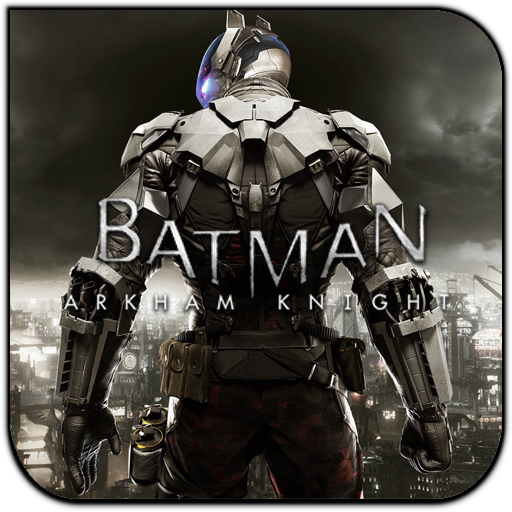

About:
Batman: Arkham Knight is a 2015 action-adventure video game developed by Rocksteady Studios and published by Warner Bros. Interactive Entertainment for the PlayStation 4 and Xbox One video game consoles, and Microsoft Windows. Based on the DC Comics superhero Batman, it is the successor to the 2013 video game Batman: Arkham Origins, and the fourth main installment in the Batman: Arkham series. Arkham Knight was released worldwide on June 23, 2015. Written by Sefton Hill, Ian Ball and Martin Lancaster, Arkham Knight is based on the franchise's long-running comic book mythos. Set one year after the events of 2011's Batman: Arkham City, the game's main storyline follows Batman as he confronts Scarecrow, who has launched an attack on Gotham City, causing a city-wide evacuation. Scarecrow, with the help of the mysterious Arkham Knight, is also able to unite Batman's greatest foes in an attempt to finally destroy Batman. The game is presented from a third-person perspective, with a primary focus on Batman's melee combat, stealth abilities, detective skills, and gadgets. Arkham Knight also introduces the Batmobile as a playable vehicle, which can be used for transportation or combat. The game expands Batman's arsenal of gadgets and combat attacks and offers a more open world structure, allowing the player to complete side missions away from the primary storyline. The console versions of Arkham Knight received acclaim from reviewers, particularly for its narrative, visuals, gameplay, combat, and world designs, with most criticism given to the emphasis on the Batmobile. The Windows version, however, became the subject of intense criticism due to major performance issues, even on high-end graphics hardware, prompting Warner Bros. to temporarily withdraw that version of the game from sale. Upon its release, the game was the fastest selling game of 2015, and the fastest selling game of the Arkham series, reaching over 5 million units sold globally by October 2015. Rocksteady released additional content for the game, including story-driven missions, challenge maps and skins for Batman and his allies, as well as new Batmobiles from Batman's history and custom racetracks for them.